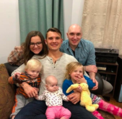
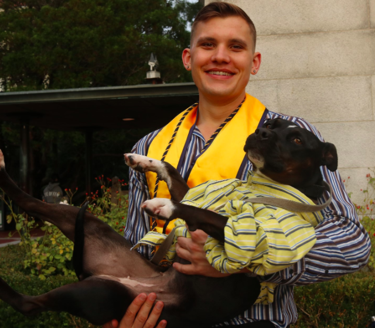

- Graham Woolley
- Home
- Resume
- Experience
- My Thoughts on Climate

Greetings from Graham and Jenga!
My home is Berkeley, California.
My home is Berkeley, California.
I grew up in a privileged neighborhood of Chicago's northern suburbs. I went to a high school where the default was to go to some four-year college after graduation. I was one of the only students who didn't. For financial reasons as well as to pursue an athletic career, I moved to Southern California to go to community college. After three years there, I transferred to UC Berkeley to study physics, where I learned how the world works fundamentally and gained my most useful skills, particularly related to problem solving. Now I'm a STEM teacher at ARISE High School in Oakland, CA.
I love being a teacher because watching students grow and learn over time is so rewarding. As a STEM teacher, I never lose the novelty in anything because the students are constantly re-discovering it in front of me. The most important things in my life are my dog (Jenga, pictured above), my family, my music (I love to play the guitar and other instruments), and the wonderful nature around me.

More than anything else, I care deeply about the environment and about this planet that we all inhabit. I'm gravely concerned about climate change and want to do something about it. That's why, in a couple years, I'll be applying to PhD programs to study materials science with a focus in battery technology. Batteries are the only piece of the climate puzzle that haven't been figured out yet. I want to find a material that can replace lithium in our batteries so that they'll be sustainable long into the future.
One goal of mine is to help all of my students finish their Techdegrees. I'm just a couple weeks ahead of them and I want to motivate them to succeed. In the process, I'll also learn a lot about web development! I'm excited.
I also have a list of miscellaneous goals involving my health and skills:
In my spare time I like to go hiking with Jenga, play my guitar, read all sorts of books, meditate, take naps, go paddleboarding, camp, hang out with friends, and go swimming. I currently live in an East Bay neighborhood near Berkeley overlooking the Bay with a stunning view of the Golden Gate and Mt. Tamalpais.
